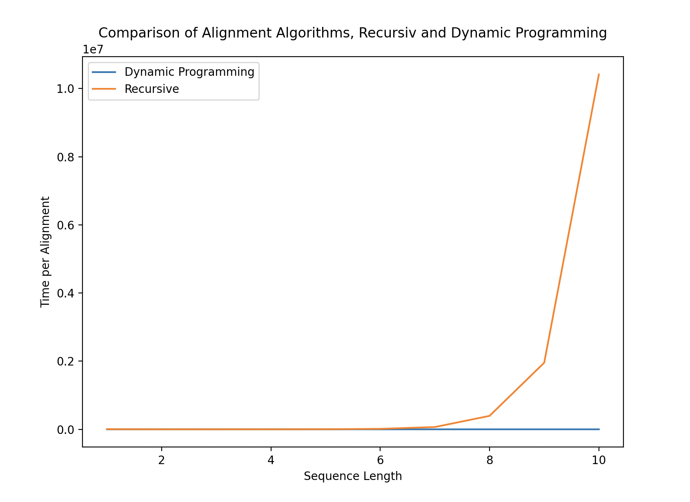
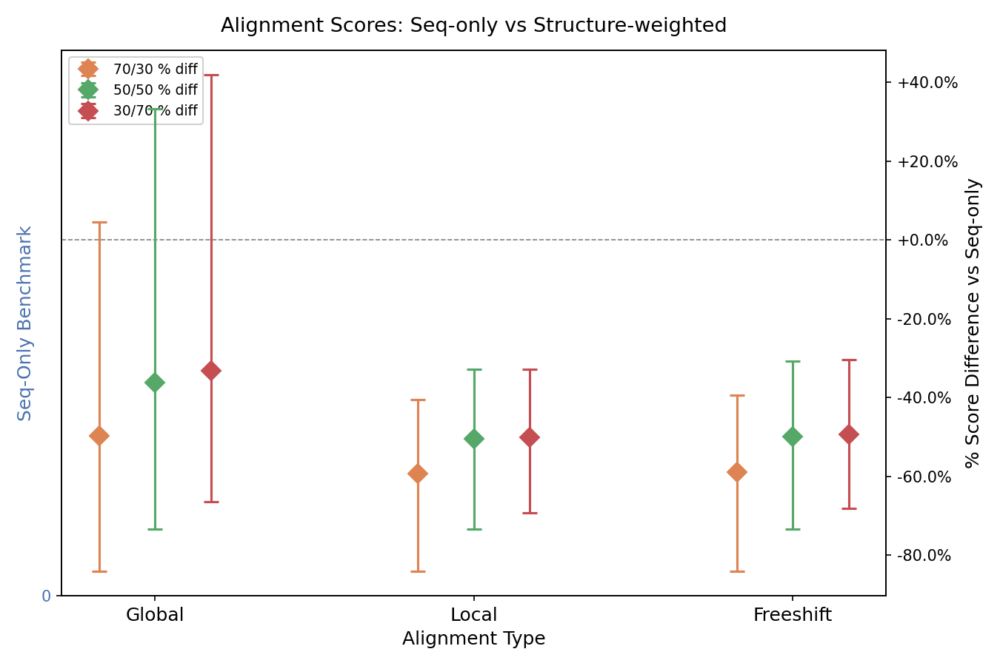
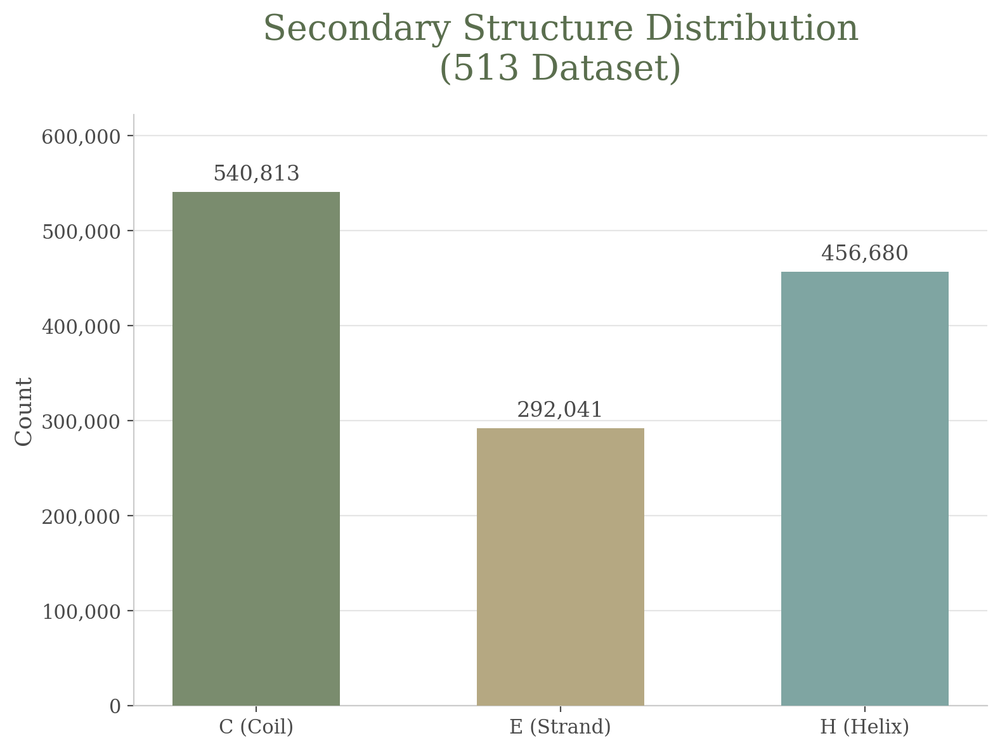
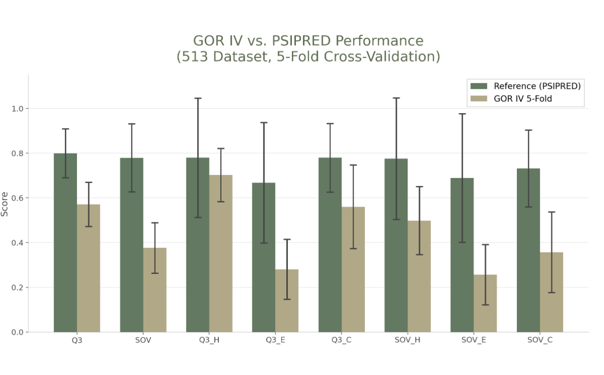
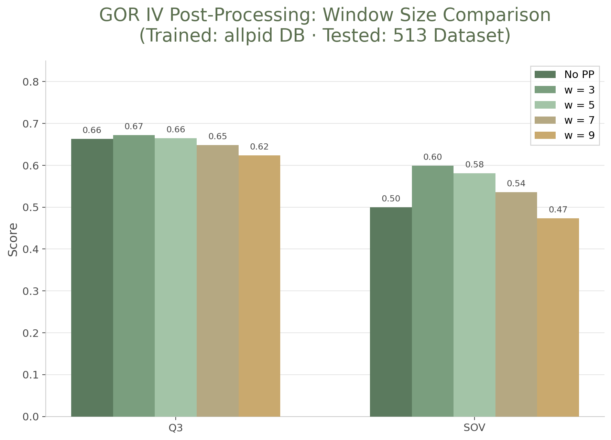

Documentation and Instructions for using BioTools
Our alignment tool utilises the Needleman-Wunsch and Gotoh algorithms to compute your alignmets instead of the time intensive Recursive method. While simple to do on pen and paper, the amount of compute time needed increases exponentially with sequence length.

If you want to consider secondary structure, simply upload a Pairs File and a Sec_Lib file. You can find the needed format for those in our Input-Formats section below. Our standard score calculation uses the Levitt Scoring Matrix at a

Your answer here.
Your answer here.
Your answer here.


We applied a simple post-processing algorithm on the predict output. Which checks for unlikely secondary structure occurrences, by substituting with the structure most common in a given window.
